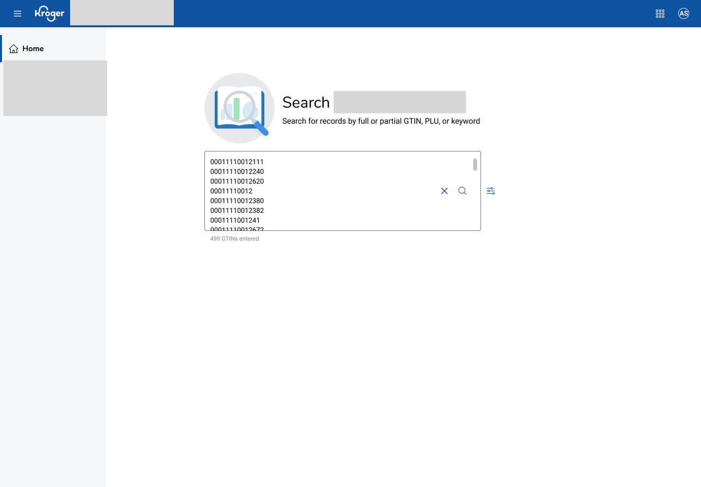

Specialists working in Kroger's item-management platform often need to check the status of many items at once — hundreds of GTINs at a time — before acting on them. The existing search only supported looking up one item at a time, so a routine bulk check meant repeating the same lookup over and over.
Context
Checking hundreds of items, one at a time
Design Response
A single search-and-act flow
I designed a bulk search input that accepts a full or partial GTIN, PLU, or keyword — pasted in as a list, hundreds at a time — and returns matching records in one pass instead of one search per item.

The second piece closed the loop: from the search results page, a specialist can select item(s) and create a task directly, instead of leaving the results to start a separate task-creation flow and losing their place in the list.

Impact
Where this stands
The combined flow collapses what used to be a repeated, one-item-at-a-time lookup followed by a separate task-creation step into a single bulk search-and-act workflow — the everyday case for specialists managing large batches of items.
Reflection
This project sits right next to the onboarding work: one taught people the platform, the other made the platform itself faster to use. Together they're the two halves of what "onboarding" actually means to me — understanding where people get stuck, and then removing the friction rather than just explaining around it.